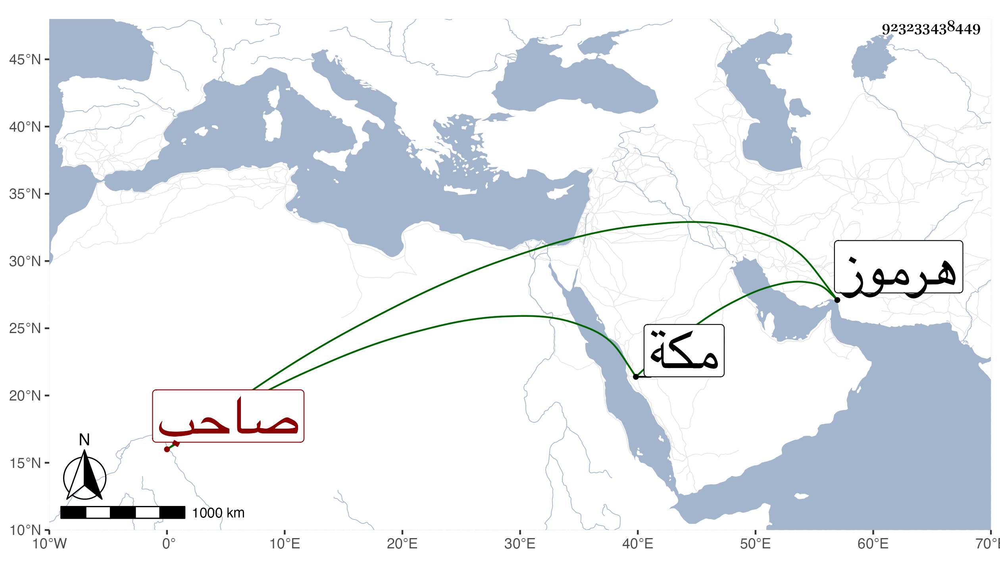

0902Sakhawi.DawLamic.ITO20230111-ara1.EIS1600.923233438449
Biography ID: 923233438449
191
توران شاه بن تهمتن شاه بن توران شاه صاحب هرموز ، كان في سنة أربع وأربعين وثمانمائة وهو مذكور في الحوادث وبلغني أنه حج في صغره مع أبيه وعمر حتى مات قبيل سنة سبعين ، وكان خيرا يرسل بالقاتل والسارق إلى قضاة الشرع ويكرم المراكب الواصلة من مكة بالاعفاء من المكس ويأكل من صيد يده ، وسم غير مرة واستقر بعده ابنه مقصود فدام قليلا ثم كحل ثم ابنه الملا شهاب الدين وشنق بعد سنين في الحماية ثم ابنه الثالث مرغل وهو بها إلى تاريخه سنة سبع وتسعين .
